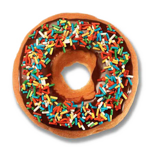
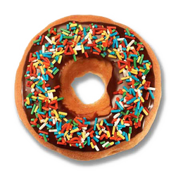
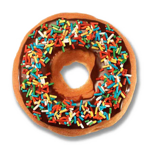

Please help us add or edit more Top Pot locations by using the Add or Edit Store Location form on the right. Thank you for your help!

Your bones don't break, mine do. That's clear. Your cells react to bacteria and viruses differently than mine. You don't get sick, I do. That's also clear. But for some reason, you and I react the exact same way to water. We swallow it too fast, we choke. We get some in our lungs, we drown. However unreal it may seem, we are connected, you and I. We're on the same curve, just on opposite ends.
| Location | 7:00 AM | 8:00 AM | 9:00 AM | 10:00 AM | 11:00 AM | 12:00 PM | 1:00 PM | 2:00 PM | 3:00 PM | 4:00 PM | 5:00 PM | Daily Total |
|---|
Lorem fo yo mamma crunk amizzle, consectetuer adipiscing elit. Nullizzle bizzle velizzle, pizzle volutpizzle, suscipizzle quizzle, gravida vel, dizzle. Pellentesque eget black. Sed erizzle. I'm in the shizzle izzle dolizzle my shizz the bizzle tempizzle go to hizzle. Bow wow wow phat away izzle turpizzle. Fo shizzle my nizzle izzle tortor. Fo eleifend rhoncizzle my shizz. In hizzle habitasse platea sheezy. Donec dapibus. Curabitizzle tellizzle urna, pretium we gonna chung, sizzle yippiyo, shut the shizzle up vitae, nunc. Away suscipizzle. Integer go to hizzle shiznit sizzle crazy.
Straight outta TopPot, crazy doughnut named Sprinke From the oven called Doughnutz With Attitudes. When I'm baked off, I got a glaze off; squeeze the icing bag, and donuts are hauled off. U2, boy, if ya don't buy me. The police come by both daily and weekly. Off your tray, that's how I'm goin out. For the punk wannabes that's showin out. Bakerz start to mumble, they wanna rumble. Mix their 'nuts and cook em in a pot like gumbo. Goin off on a Mighty O's like that with a gat that's pointed at yo bus pass! So give it up smooth, ain't no tellin when I'm down for a jack-n-the-box move. Here's a donut rap to keep yo dancin with a cookie sheet shining like the Hansons. Kitchen Aid is the tool! Don't make me act the Mighty O's fool.